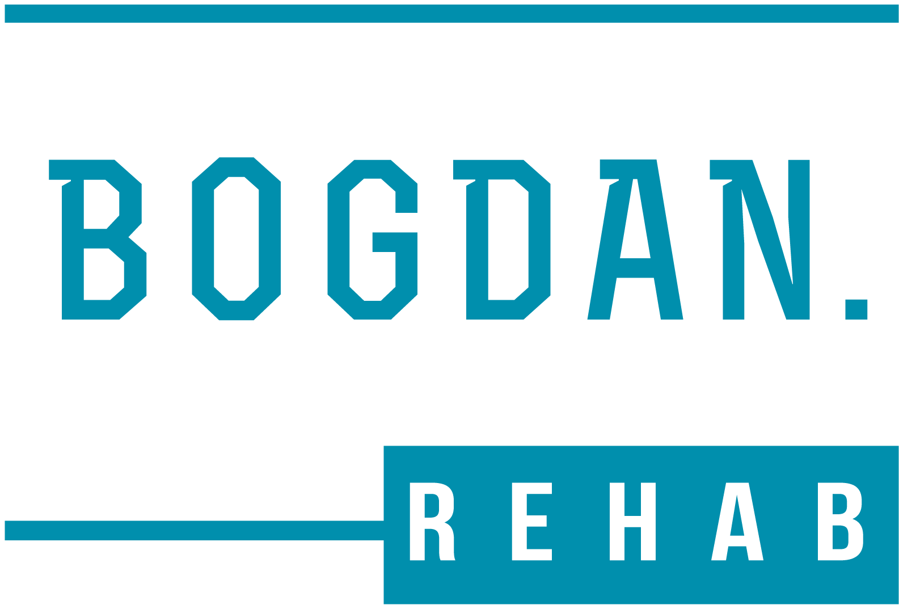
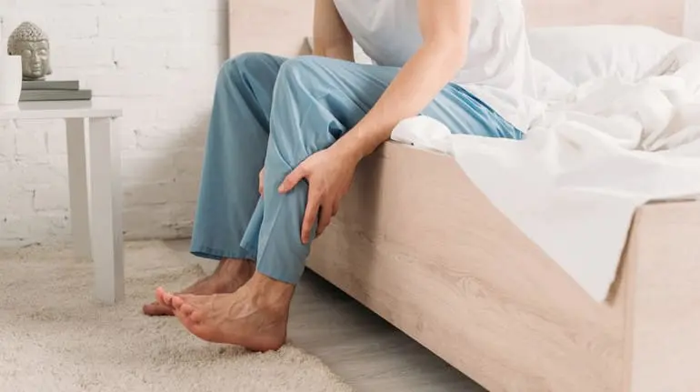
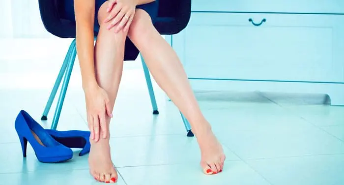
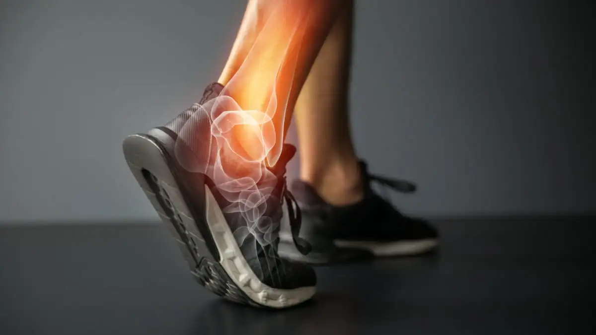
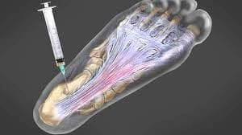

Перший етап
Зменшити біль та відновити рух
Простіші вправи на рухливість, активацію м’язів стопи та гомілки і поступове повернення навантаження.

Авторський курс від фізичного терапевта
Покрокова програма для зменшення болю в п’яті та стопі за допомогою вправ і самомасажу — вдома, без спеціального обладнання, всього 15 хвилин на день.
Підійде, якщо боляче ставати на стопу зранку, а мазі, процедури чи масаж дали лише тимчасове полегшення.
Лише за 370 грн, замість 1899 грн
🎁 Бонус: відео про методи лікування болю в стопі, які реально працюють
Залишилось місць за акцією

Важко зробити перші кроки зранку — біль у п’яті не дає вільно рухатись.

Ноги втомлюються і болять після довгого робочого дня.

Стопа ниє після тренування чи пробіжки, не можеш повернутись у форму.

Мазі, процедури, устілки чи самомасаж можуть полегшити стан, але дискомфорт повертається під час ходьби або навантаження.
Якщо біль регулярно повертається, важливо не лише зменшувати симптоми, а й поступово відновлювати здатність стопи переносити навантаження.
При болю в стопі часто використовують мазі, таблетки, самомасаж або фізіопроцедури. Вони можуть допомогти зменшити симптоми, але без активного відновлення цього інколи недостатньо або ефект може бути тимчасовим.
Тому важливо додавати вправи та поступово змінювати навантаження відповідно до етапу відновлення.
Простіші вправи на рухливість, активацію м’язів стопи та гомілки і поступове повернення навантаження.
Складніші вправи на силу, баланс і витривалість, щоб поступово повернутися до ходьби, роботи та спортивних навантажень.
Кожен комплекс адаптований під різні етапи відновлення — від гострого болю до функціонального повернення.
У кожному комплексі – покрокові відеоінструкції з правильним виконанням. Без води, тільки суть. Просто дивишся та повторюєш.
Вправи займають всього 15 хвилин на день, можна тренуватись у будь-який час.
Курс проходить у зручному форматі: щодня бот надсилає нові відео й рекомендації, щоб тримати мотивацію.
Тести допомагають оцінити рухливість, силу та контроль стопи на старті й краще орієнтуватися у прогресі під час курсу.
Поступовий перехід від простіших вправ до складніших із контрольованим збільшенням навантаження.
Відчутне зменшення дискомфорту вже з першого тижня за рахунок правильно підібраних навантажень.
Зникає відчуття «свинцю в ногах» після роботи
Знову можеш довго гуляти з дітьми чи друзями без болю
Покращення амплітуди рухів у гомілково-ступневому суглобі та впевненість в ходьбі.
Покращення стану при плостостопості або при вальгусі великого пальця
💡 90% опитаних учасників відзначили перше полегшення вже протягом першого тижня*
*За результатами опитувань і відгуків учасників програми. Індивідуальні результати можуть відрізнятися.
Після етапу 1 проходиш короткий тест — перевіряємо готовність переходити на більшу інтенсивність.
🎁 Відео на старті: фактори ризику болю в стопі, методи лікування, логіка курсу та як отримати максимум.
Окремі вправи можуть бути корисними. Але для повноцінного відновлення важлива не тільки сама вправа, а й послідовність та поступова прогресія навантаження.
Обмежена акційна ціна
Залишилось місць
Я настільки впевнений в ефективності свого курсу, що готовий зробити пропозицію, від якої неможливо відмовитися.
Запишіться на мій курс. Притримуйтесь всіх рекомендацій та активно виконуйте всі вправи. І якщо через 14 днів ви не покращите якість життя хоча б на трохи , я поверну вам кошти в повному обсязі.
Тож сміливо приєднуйтеся до мого курсу без ризику.
* Повернення діє протягом 14 днів із моменту старту курсу. Мета — зняти ризик і допомогти тобі спокійно розпочати.